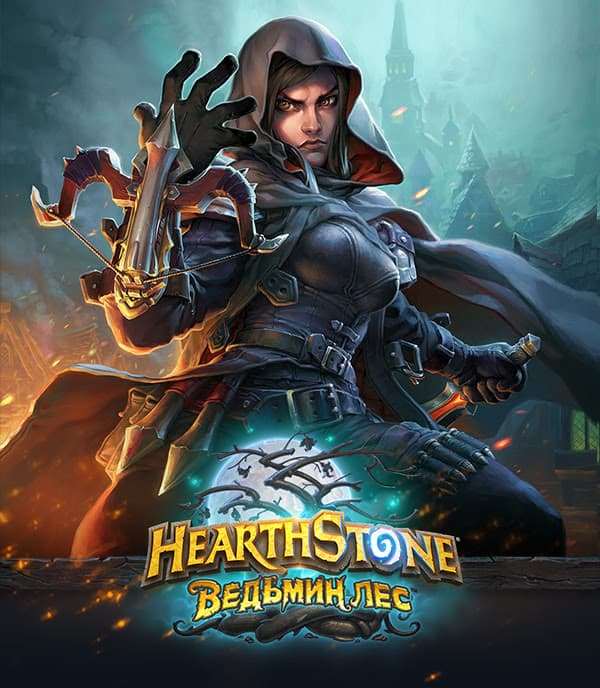
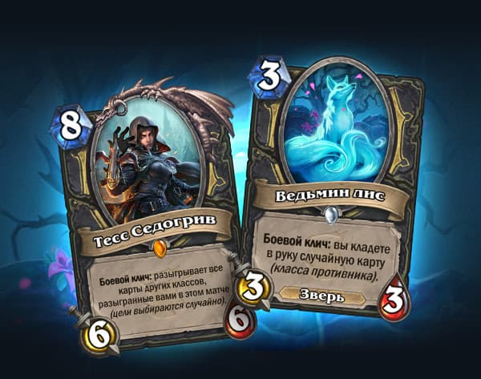
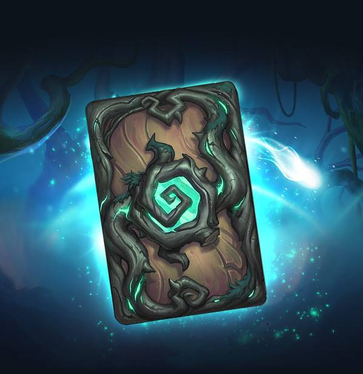
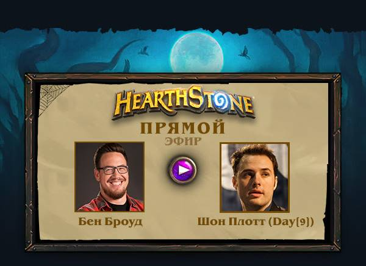

|  |
| Показ новых карт |
| Тесс Седогрив |
| Призовите на помощь принцессу Тесс Седогрив — она выйдет из тени и позволит обвести противника вокруг пальца! Это легендарное существо позволит вам активнее применять возможности, позаимствованные у других классов. |
| Оформите предзаказ на 50 комплектов карт из дополнения «Ведьмин лес» и получите в подарок еще 20 комплектов и рубашку «В темном лесу». |
|  |
| Ведьмин лис |
| Создайте колоду на основе способности «Тесс Седогрив» нарушать планы
противника. В этом вам помогут новые карты — например, «Ведьмин
лис». Это хитрое существо обеспечит хозяину преимущество своим
боевым кличем, который добавляет в руку игрока случайную карту,
предназначенную для класса противника. |
| Другие Карты |
|  |
| В подарок с предзаказом |
| на “Ведьмин лес” |
| 20 комплектов |
| и рубашка для карт “В темном лесу” |
| Оформить предзаказ |
| Предложение действительно до выхода дополнения “Ведьмин лес”. |
|  |
| Открываем последние карты в прямом эфире |
| Последние карты из дополнения «Ведьмин лес» будут открыты в прямом
эфире 9 апреля в 21:00 МСК на нашем канале Twitch. Прогуляйтесь
напоследок по заколдованному лесу перед выходом дополнения вместе с
Беном Броудом и Беном БроудомDay[9]! |
| Смотрите трансляцию |
| Будем на связи! |
| Общайтесь с единомышленниками на официальном сайте или в соцсетях. |
|